Project 3: Fun with Frequencies!
Jeffrey Zhang
Part 0: Sharpening
Approach
One way to sharpen images is to enhance the edges of an image. We can achieve this by taking low-pass filtering the image with a guassian filter and subtracting the low-passed image from the original images to get the edges. Adding these edges onto the original image will enhance the edges, sharpening the image.
For color images, I converted the rgb images into hsv images and applied this approach onto the V dimension of the image. I then converted the images back to rgb to display. Examples are shown below on Nutmeg the cat, and my dog Sybbie!
| 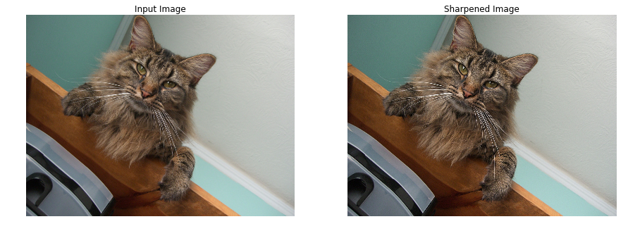 |
|---|
| 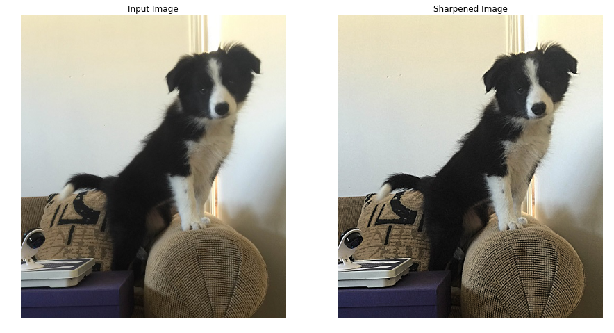 |
Part 1: Hybrid Images
Background
Hybrid Images are images that embed two images into one. They change in interpretation as a function of the viewing distance. By embedding one image in the high-frequencies and another in the low-frequenices, we are able to view the notice different images depending on the distance from which we see them!
 |
|---|
| Salvador Dali's famous Lincoln in Dalivision |
Approach
We can create our own images by first aligning two images we want to combine (courtesy of cs194 staff for the code). We choose which image we want as our low-frequency image and the other as our high frequency image. The low-frequency image is created by gaussian blurring the image (gaussian_filter(img, sigma)), whereas the high-frequency image is created subtracting the original image with the gaussian blurred version of the image (img - gaussian_filter(img, sigma).
For the combined image, I took the average of the two images and set all pixels > 1 to 1 and all pixels < 0 to 0. This is to prevent artifacts from appearing and corrects the darkness of the image. Here are three examples with sigma values for Guassian filtering below!
Derek and Nutmeg combined
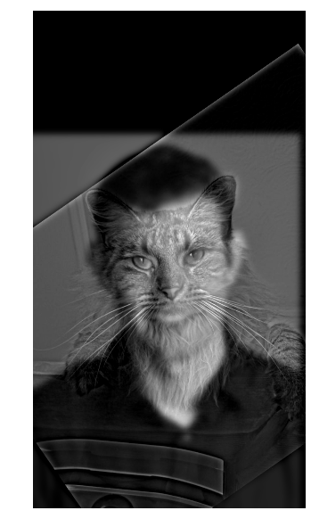 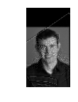I used Derek as my low-frequency image and Nutmeg as my high-frequency image. I aligned the images using their eyes.
Derek sigma = 8, Nutmeg sigma = 8
Trump and Hillary combined
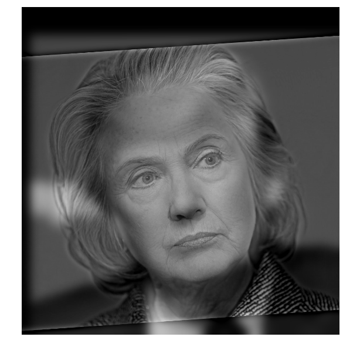 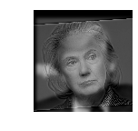I used Trump as my low-frequency image and Hillary as my high-frequency image. I aligned the images using their eyes
Trump sigma = 18, Hillary sigma = 10
Hawk and Fish combined
 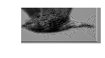
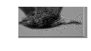
I used the hawk as my low-frequency image and the fish as my high-frequency image. I aligned the images using one eye and the end of the tails
Hawk sigma = 8, Fish sigma = 4
Best Result/Frequency Analysis
My best result is definitly Trillary. Because both the head posture, skin color, and background of the images are visually similar, the low-frequency features of Trump became a good background layer for Hillary. We can see the mismatch between the low-frequency image and the high frequency image in both DerekCat and HawkFish. A FFT frequency analysis of Trillary is shown below.
| 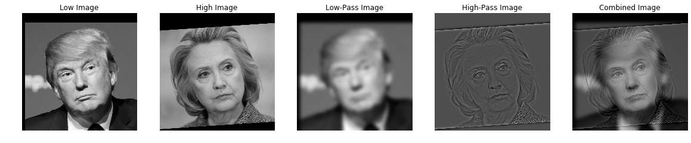 |
|---|
 |
Part 2: Gaussian and Laplacian Stacks
Below are Gaussian and Laplacian Stacks on three interesting images:
| Lincoln in Dalivision |
|---|
| 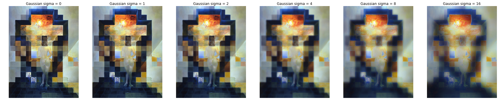 |
| 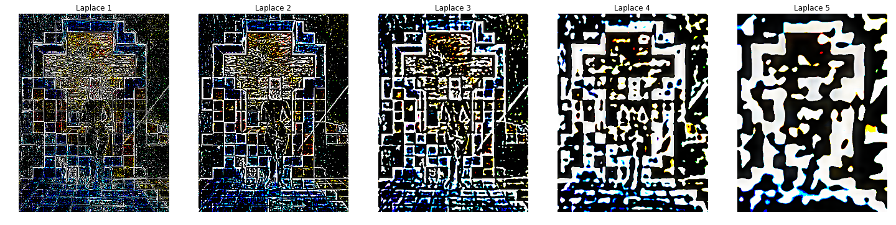 |
| MonoLisa |
|---|
 |
| 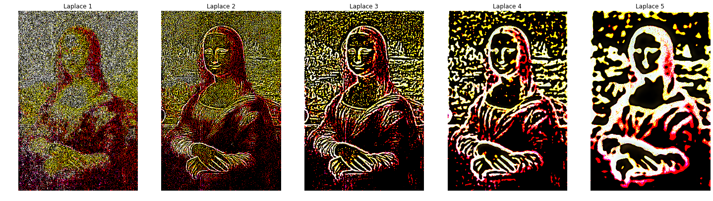 |
Notice in Laplace 2 and Laplace 3, MonoLisa appears to be smiling more compared to her original image. This smile is hidden in the high-frequencies!
| Trillary |
|---|
| 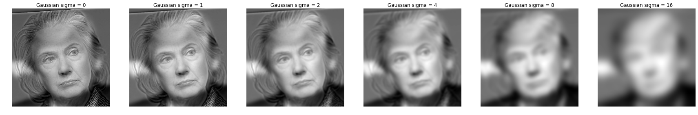 |
| 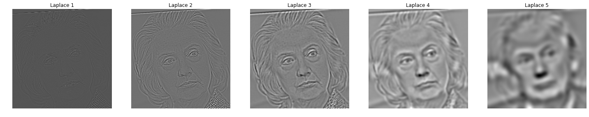 |
Here the Laplacian stack clearly shows the high-frequencies (Hillary) and after a gaussian filter of sigma = 16, we are able to extract some lower-frequencies (Trump).
Part 3: Multiresolution Blending
Background
Combining two images together is quite simple. We can just crop out half of two images and place them together. However, we want to be able to create a seamless blending between two images.
Approach
We create a masking layer to indicate the intensity of an image at each pixel. A standard masking layer looks like this:
At each frequency level (from high to low), we progressively increase the spread of the masking layer. This is to capture most of the high-frequency details of each image, but blend the low-frequency details for a smoother transition. Shown below is the increasing blur of our masking layer.
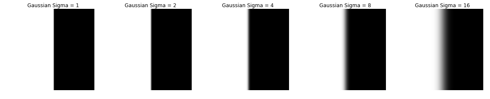Like part 0, I will convert my images into hsv images and do my blending in the V space. After applying the masks to the laplacians of the images in the V space, I convert the images back to RGB and combine the filtered laplacian images together. Here are some multiresolution blended images!
Orapple
 |
 |
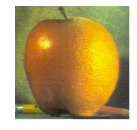 |
|---|
Orapple Laplacian Breakdown
| 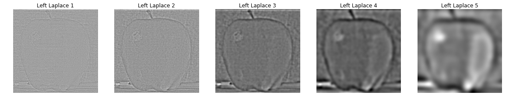 | 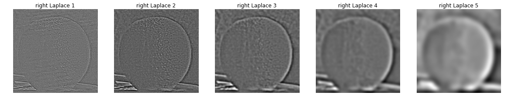 |
|---|
Space City
| City | Sky | Non Trivial Mask |
|---|---|---|
| 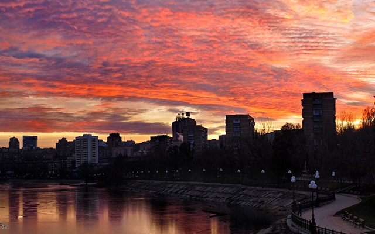 | 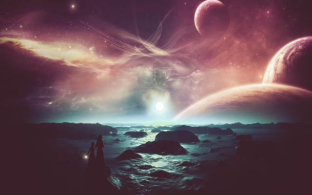 | 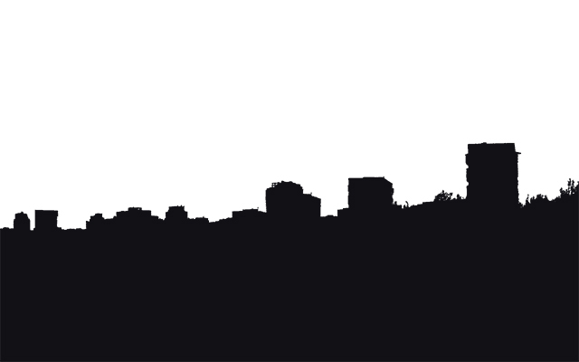 |
| Space City |
|---|
 |
| Space City Laplacian breakdown |
|---|
| 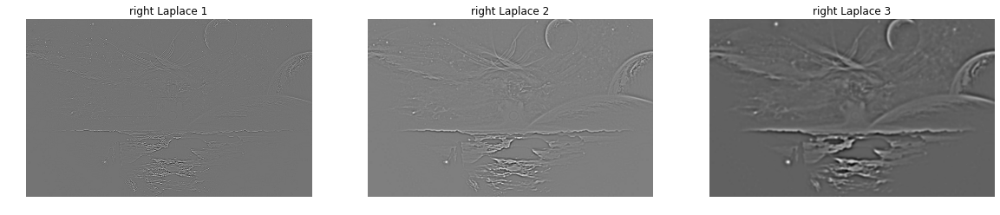 |
| 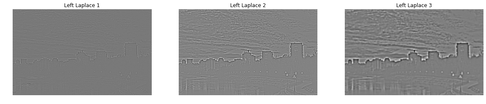 |
The blending of the two images gives a nice hazzy/misty look to the image! However, I didn't want to blur the masks beyond sigma = 4; otherwise, the buildings will look blurred out.
Multiresolution Blending Failures
Here the blended images have a very smooth edge, but because the texture of the clouds and colors of sky/water are noticeably different, there is a more apparent seam than some of the example images above.
Here I tried using RGBA to blend two color images. The laplacians themselves looked fine, however, because the raw pixel values (RGB) in RGBA stay the same, I was a bit unsure how to combine the two images' pixel values. The resulting combined Laplacian image becomes a mess of colors.